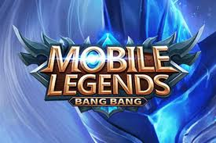
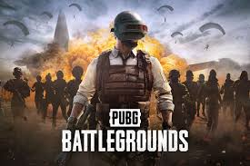

Mobile Legends
Mobile Legends: Bang Bang adalah permainan video seluler ber-genre multiplayer online battle arena yang dikembangkan dan diterbitkan oleh Moonton, anak perusahaan dari ByteDance.

PUBG Battlegrounds Mobile
Battlegrounds adalah sebuah permainan battle royale, di mana 100 orang sekaligus dapat bermain secara daring. Pemenang dari permainan ini adalah individu atau tim yang dapat bertahan hingga akhir. Pemain bisa bermain sendirian, tim dengan dua orang, dan tim dengan empat orang.

EA Sports FC
waralaba video game sepak bola yang dikembangkan oleh EA Vancouver dan EA Romania dan diterbitkan oleh EA Sports. Ini berfungsi sebagai penerus langsung dari seri FIFA mereka sebelumnya, yang dihentikan setelah pemutusan perjanjian lisensi EA dan FIFA.